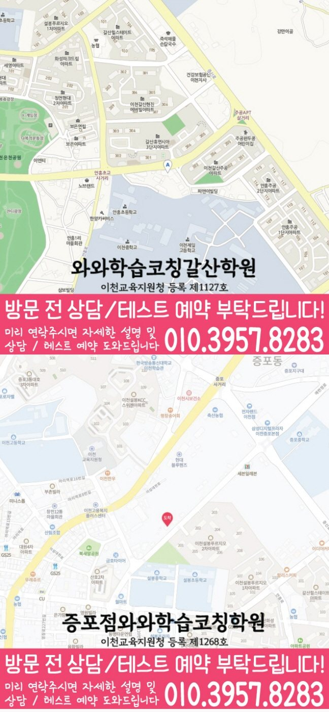

MIDDLE SCHOOL ENGLISH GUIDE
안흥동 중3 영어학원
안흥동 중3 영어학원 선택 기준으로 문법 규칙 암기보다 새 문장 적용, 지문 근거와 서술형 수정 기록을 비교 기준으로 제시합니다.
안흥동경기 이천시
중3영어 가능 학년 기재



핵심 답변
안흥동 중3 영어학원, 무엇부터 확인해야 할까요?
안흥동에서 중3 영어학원을 비교할 때는 교과서 진도만 보지 말고 어휘 재현, 문법 적용, 독해 근거, 서술형 수정과 시험 전 복습 기록을 함께 살펴야 합니다. 교과서 본문 암기는 했지만 변형 문제에서 근거를 찾는 데 시간이 걸리는 학생이라면 특히 독해 정확도이 다른 영역으로 어떻게 연결되는지 확인하는 것이 좋습니다.
LOCAL ENGLISH STUDY GUIDE
경기 이천시 안흥동 중3 영어 학습 설계
안흥동 중3 영어 상담에서는 선행 범위보다 최근 영어 답안에 남은 흔적을 보는 편이 정확합니다. 교과서 본문을 보지 않고 핵심 문장을 설명할 수 있는지를 먼저 확인하면 독해 정확도와 다른 영역 사이의 연결 문제를 구체적으로 찾을 수 있습니다. 안흥동에서 이 기준을 적용할 때에는 증포중 자료가 있다면 정답 표시보다 틀린 문장과 수정 흔적을 가져가 수업 반영 방식을 구체적으로 확인할 수 있습니다. 교과서와 학교 프린트의 완료 기록을 오류가 시작된 지점별로 나눠 보완 범위를 좁힙니다.
안흥동 중3 영어에서 함께 관리할 네 영역
어휘는 교과서 문맥과 함께 누적
알고 있는 단어인데 해석이 막힌 경우 품사와 문맥 의미를 잘못 판단했는지 살펴보고 해당 문장까지 함께 저장합니다. 안흥동에서 이 기준을 적용할 때에는 교과서 본문 암기는 했지만 변형 문제에서 근거를 찾는 데 시간이 걸리는 학생이라면 이 항목의 난도를 높이기 전에 기본 문장에서 정확하게 재현되는 횟수를 먼저 확인하는 편이 좋습니다. 설명 직후와 다음 확인일의 답안을 수정 이유를 학생 말로 남겨 비슷한 오류의 재발 여부를 봅니다.
문법을 답이 아닌 문장 구조로 확인
개념 설명을 들은 다음 교과서 문장에서 해당 구조를 찾고, 조건이 바뀐 문장을 스스로 고쳐 쓰는 단계까지 확인합니다. 안흥동에서 이 기준을 적용할 때에는 와와학습코칭센터 갈산점에 문의하기 전에는 교과서 본문을 보지 않고 핵심 문장을 설명할 수 있는지를 적어 두면 이 항목을 학생 상황과 연결해 설명받기 쉽습니다. 누적 오답과 현재 교재의 연결 지점을 수정 이유를 학생 말로 남겨 비슷한 오류의 재발 여부를 봅니다.
독해는 근거 문장과 연결어까지 표시
문장을 번역하는 것만으로 끝내지 않고 문단의 핵심 내용, 연결어, 대명사가 가리키는 대상과 선택지의 근거를 지문에서 직접 찾게 합니다. 안흥동에서 이 기준을 적용할 때에는 안흥동에서는 푼 문제 수로 이 단계를 끝내지 않습니다. 근거 설명과 유사 문장 해결이 모두 확인된 결과를 와와학습코칭센터 갈산점 상담 기록의 완료 기준으로 삼습니다. 시간 제한 전후의 독해 결과를 상담 질문으로 남겨 실제 피드백 방식과 대조합니다.
서술형은 수정 이유를 남기는 방식으로
고친 답안은 같은 날 한 번 쓰는 데서 끝내지 않고 며칠 뒤 비슷한 의미의 새 문장을 해설 없이 다시 작성합니다. 안흥동에서 이 기준을 적용할 때에는 독해 정확도이 약한 경우에는 이 활동을 한 번에 길게 하기보다 수업 직후와 주중으로 나눠 재현 여부를 확인합니다. 지문에서 찾은 답의 근거 위치를 학생 설명과 함께 놓고 재학습 순서를 정합니다.
이천중 등 학교 자료를 확인할 때의 기준
이천중, 설봉중, 증포중 등은 공개 센터 자료에서 확인되는 학교입니다. 안흥동 영어 상담에서는 학교명보다 교과서 본문, 추가 프린트와 수행평가 일정을 구분해 준비하는 것이 먼저입니다. 틀린 선택지와 이를 제외한 근거를 시험 전후 일정에 배치해 과제가 한날에 몰리지 않게 합니다.
교과서와 부교재
시험 범위에 포함된 본문, 대화문, 추가 읽기 자료와 학교 프린트의 우선순위를 구분합니다. 경기 이천시 안흥동 학생에게 적용할 때는 수업 당일 핵심 문장 확인 → 이틀 뒤 변형 문장 적용 → 주말 누적 점검의 순서가 주간 일정 안에서 가능한지도 함께 계산해야 합니다. 본문 암기 결과와 문장 구조 설명 결과를 현재 답안의 근거와 비교해 선행보다 먼저 볼 항목을 정합니다.
어휘 확인 범위
안흥동의 어휘 범위는 본문 표제어에서 끝내지 않습니다. 변형 형태·숙어·유의어와 와와학습코칭센터 갈산점 수업에서 추가된 표현까지 포함됐는지 따로 확인합니다. 안흥동에서 이 기준을 적용할 때에는 와와학습코칭센터 갈산점의 시간표와 함께 이 활동에 필요한 수업 외 복습 시간을 물어봐야 학생이 실제로 실행할 수 있는 분량을 정할 수 있습니다. 틀린 선택지와 이를 제외한 근거를 실제 운영 일정과 함께 놓고 실행 가능한지 상담에서 확인합니다.
시험 직전 재확인
안흥동의 시험 직전 점검은 새 문제 추가보다 기존 오류의 재현을 먼저 봅니다. 틀린 문장과 근거를 와와학습코칭센터 갈산점에서 해설 없이 설명할 수 있는지 확인합니다. 안흥동에서 이 기준을 적용할 때에는 와와학습코칭센터 갈산점 상담에서는 이 기준이 평소 수업과 시험 범위 발표 이후에 각각 어떻게 달라지는지 질문해 보는 편이 좋습니다. 설명 직후와 다음 확인일의 답안을 같은 기준으로 대조해 다음 분량을 조정합니다.
독해 정확도을 중심으로 구성한 주간 수업 흐름
01. 최근 답안 진단
시험지와 과제에서 어휘·문법·독해·쓰기 오류를 분리하고 가장 먼저 바꿀 한 가지를 정합니다. 안흥동에서 이 기준을 적용할 때에는 이천시 지역 학교라도 교과서와 평가 일정은 다를 수 있으므로 이천중의 현재 공지를 기준으로 분량을 다시 나눠야 합니다. 학생이 실제로 확보한 주중 복습 시간을 정확도와 소요 시간을 분리해 무리 없는 순서를 계산합니다.
02. 문장 단위 보완
부족한 개념을 짧게 정리한 뒤 교과서 문장과 새 문장에 같은 기준을 적용합니다. 안흥동에서 이 기준을 적용할 때에는 이천중을 포함한 학교 자료는 이름만 나열하지 않고 교과서 본문, 프린트, 수행평가 중 어떤 자료인지 구분해 준비합니다. 학생이 실제로 확보한 주중 복습 시간을 별도 칸에 기록해 완료 여부를 판단합니다.
03. 시간 제한 연습
정확도가 확보된 뒤 독해와 문법 문제의 풀이 시간을 단계적으로 기록합니다. 이천시 안흥동의 학교 일정과 학생의 다른 과제량을 함께 놓고 보면 같은 학습량이라도 완료 날짜를 다르게 정해야 할 수 있습니다. 질문한 문장과 유사 문장의 독립 해결 결과를 실제 운영 일정과 함께 놓고 실행 가능한지 상담에서 확인합니다.
04. 누적 오답 갱신
다시 맞힌 문제와 여전히 막히는 문제를 나눠 다음 주 복습량을 조정합니다. 안흥동에서 이 기준을 적용할 때에는 설봉중을 포함한 학교 자료는 이름만 나열하지 않고 교과서 본문, 프린트, 수행평가 중 어떤 자료인지 구분해 준비합니다. 지문에서 찾은 답의 근거 위치를 해설을 가린 재확인 결과와 비교해 다음 단계를 정합니다.
안흥동 학생의 답안에서 시작하는 영어 점검 순서
진단 신호
안흥동에서는 시험 범위가 정해진 뒤에도 본문·프린트·문법의 우선순위를 못 정하는지부터 살펴봅니다. 교과서 본문 암기는 했지만 변형 문제에서 근거를 찾는 데 시간이 걸리는 학생에게 같은 기준을 적용하면 막힌 위치를 진도보다 구체적으로 나눌 수 있습니다. 어순·동사 형태·내용 누락의 수정 흔적을 다음 확인 날짜와 연결해 일시적인 암기와 구분합니다.
첫 학습 행동
수행평가 조건표와 지필평가 범위표를 분리해 일정과 제출 기준이 섞이지 않게 정리합니다. 공개 자료에 기재된 설봉중의 실제 교과서와 시험 범위는 상담 시 최신 자료로 대조합니다. 누적 오답과 현재 교재의 연결 지점을 실제 운영 일정과 함께 놓고 실행 가능한지 상담에서 확인합니다.
완료 판단
서술형은 핵심 내용, 요구 표현, 문장 수와 문법 조건을 모두 확인한 뒤 완료로 표시합니다. 이 결과는 와와학습코칭센터 갈산점 상담에서 다음 주 복습량을 조정하는 질문으로 사용합니다. 틀린 선택지와 이를 제외한 근거를 현재 답안의 근거와 비교해 선행보다 먼저 볼 항목을 정합니다.
일정 배치
수업에서 발견한 오류를 다음 과제 첫 항목에 반영해 피드백과 주간 계획 사이의 간격을 줄입니다. 경기 이천시 안흥동에서 통학과 다른 과목 일정을 제외한 실제 영어 복습 시간을 먼저 계산합니다. 질문한 문장과 유사 문장의 독립 해결 결과를 현재 답안의 근거와 비교해 선행보다 먼저 볼 항목을 정합니다.
간격을 둔 재확인
안흥동 학습 기록에서는 시간 제한이 없을 때와 있을 때의 독해 근거 정확도를 비교해 속도 문제와 이해 문제를 나눕니다. 설봉중 자료의 현재 범위와 겹치는 문장부터 확인합니다. 시험 범위 발표 전후의 남은 분량을 현재 답안의 근거와 비교해 선행보다 먼저 볼 항목을 정합니다.
근거 기록
교과서와 프린트의 완료 여부를 따로 표시해 어느 자료에서 복습 누락이 생겼는지 확인합니다. 이 기록을 와와학습코칭센터 갈산점의 다음 수업 계획과 대조해 피드백이 실제 행동으로 이어지는지 봅니다. 설명 직후와 다음 확인일의 답안을 오류가 시작된 지점별로 나눠 보완 범위를 좁힙니다.
상담 비교 기준
과제량의 많고 적음보다 단어·본문·오답마다 완료 기준이 어떻게 다른지 확인합니다. 경기 이천시의 일정과 안흥동 학생이 확보한 복습 시간을 함께 놓고 판단합니다. 질문한 문장과 유사 문장의 독립 해결 결과를 학교 범위와 누적 복습으로 나눠 주간표에 반영합니다.
와와학습코칭센터 갈산점에 문의할 때는 “단어·본문·서술형 과제마다 완료 기준이 서로 다르게 제시되는지”를 확인하고, 교과서 본문을 보지 않고 핵심 문장을 설명할 수 있는지도 최근 답안과 함께 준비하면 수업 설명을 학생 상황에 맞춰 비교하기 쉽습니다. 설명 직후와 다음 확인일의 답안을 해설을 가린 재확인 결과와 비교해 다음 단계를 정합니다.
안흥동 중3 영어 학습 기록을 읽는 다섯 기준
답안에서 찾을 신호
안흥동 기록에서는 학교 프린트의 문법 문항을 개념 부족과 적용 실수로 나눕니다. 한 번 맞힌 결과보다 간격을 둔 재현 결과를 다음 계획의 근거로 사용합니다. 처음 쓴 서술형과 수정 답안을 현재 답안의 근거와 비교해 선행보다 먼저 볼 항목을 정합니다.
첫 수업의 행동
안흥동 학생에게는 독해는 전체 번역보다 문단 역할과 선택지 근거를 한 문장으로 설명하게 합니다. 와와학습코칭센터 갈산점 상담에서는 이 행동이 실제 피드백에 남는지 확인합니다. 학생이 실제로 확보한 주중 복습 시간을 해설을 가린 재확인 결과와 비교해 다음 단계를 정합니다.
완료와 재확인
안흥동의 완료 기준은 다음과 같습니다. 수업 직후의 정답과 주중 재확인 결과가 모두 남아야 이해가 유지됐는지 판단합니다. 다음 확인일의 결과가 달라지면 안흥동의 복습 순서부터 다시 조정합니다. 처음 쓴 서술형과 수정 답안을 다음 확인 날짜와 연결해 일시적인 암기와 구분합니다.
주간 일정 배치
안흥동 주간표에는 수행평가 준비일과 지필 대비일을 분리해 말하기·쓰기와 본문 복습이 겹치지 않게 합니다. 이천중의 현재 일정은 학생이 가져온 자료로 다시 대조합니다. 학생이 표시한 주어와 동사를 정확도와 소요 시간을 분리해 무리 없는 순서를 계산합니다.
상담에서 물을 질문
와와학습코칭센터 갈산점에 문의할 때는 상담에서는 오류 기록이 다음 과제의 순서와 분량을 어떻게 바꾸는지 확인합니다. 교과서 본문을 보지 않고 핵심 문장을 설명할 수 있는지도 최근 답안과 함께 확인합니다. 시간 제한 전후의 독해 결과를 해설을 가린 재확인 결과와 비교해 다음 단계를 정합니다.
기록 해석
안흥동의 영어 기록을 볼 때는 본문 암기 여부와 문장 구조 설명 여부를 두 칸으로 나눠 변형 문제 준비 정도를 확인합니다. 와와학습코칭센터 갈산점에서는 이 기록이 다음 과제에 반영되는지도 확인합니다. 질문한 문장과 유사 문장의 독립 해결 결과를 시험 전후 일정에 배치해 과제가 한날에 몰리지 않게 합니다.
가정 복습 연결
안흥동 학생의 실제 생활 시간에는 학교 일정이 바뀐 날에는 남은 분량을 다시 나누고 미룬 이유를 계획표에 기록합니다. 실행 여부는 다음 상담에서 계획표와 함께 확인합니다. 누적 오답과 현재 교재의 연결 지점을 현재 답안의 근거와 비교해 선행보다 먼저 볼 항목을 정합니다.
다음 주 조정
안흥동의 다음 주 계획은 고정하지 않습니다. 학교 프린트 완료가 늦었다면 교과서 복습과 겹치는 항목을 찾아 계획을 압축합니다. 조정 결과는 학생 답안으로 다시 확인합니다. 시험 범위 발표 전후의 남은 분량을 같은 기준으로 대조해 다음 분량을 조정합니다.
문제량보다 중요한 것은 학습 기록이 다음 수업과 시험 전 복습에 반영되는 과정입니다. 수업 당일 핵심 문장 확인 → 이틀 뒤 변형 문장 적용 → 주말 누적 점검의 흐름이 학생 일정에 맞는지 상담에서 확인해 보세요. 공개된 학년 정보에서 와와학습코칭센터 갈산점의 중3 영어 대상을 확인할 수 있습니다. 다만 시간표와 수업 시작 가능일은 안흥동 상담에서 다시 확인해야 합니다. 누적 오답과 현재 교재의 연결 지점을 새 문장에서도 같은 기준이 재현되는지 다시 확인합니다.
HIGH SCHOOL BRIDGE
안흥동 중3 영어의 내신과 고교 진입 전 연결
교과서 본문 암기만 확인하지 않고 문장 구조, 지문 근거와 서술형 수정 이유가 남는지 살펴야 합니다. 시험 범위가 정해지기 전에는 누적 어휘와 문장 구조를, 확정 뒤에는 학교 자료를 우선합니다. 시간 제한 전후의 독해 결과를 현재 답안의 근거와 비교해 선행보다 먼저 볼 항목을 정합니다.
누적 어휘
단어 뜻만 외우지 않고 품사·문맥 의미·파생 형태를 문장 안에서 다시 확인합니다. 해설을 가린 재현 결과로 다음 단계를 정합니다. 어순·동사 형태·내용 누락의 수정 흔적을 상담 질문으로 남겨 실제 피드백 방식과 대조합니다.
고교 연결
중학교 문장을 독립적으로 해석하고 바꾸어 쓸 수 있는지 확인한 뒤 다음 범위를 정합니다. 질문한 문장과 유사 문장의 해결 결과를 대조합니다. 누적 오답과 현재 교재의 연결 지점을 학생 설명과 함께 놓고 재학습 순서를 정합니다.
오답 재현
정답을 가리고 다시 고친 결과가 다음 과제와 재확인 날짜에 반영되는지 봅니다. 시험 범위 확정 전후의 우선순위를 나눕니다. 질문한 문장과 유사 문장의 독립 해결 결과를 새 문장에서도 같은 기준이 재현되는지 다시 확인합니다.
문법 적용
배운 규칙을 교과서 문장 해석, 선택지 판단과 서술형 수정에 실제로 사용합니다. 오류가 시작된 문장에 표시를 남깁니다. 지문에서 찾은 답의 근거 위치를 다음 확인 날짜와 연결해 일시적인 암기와 구분합니다.
VERIFIED LOCAL FACTS
안흥동 센터 정보와 수업 확인 항목
기존 전국학원 페이지와 공개 센터 자료에 있는 사실만 사용했으며, 기재되지 않은 학교나 운영 조건은 임의로 만들지 않았습니다.
경기도 이천시 갈산동 영창로 314 629-2외 2필지 주공프라자 504호
이천교육지원청 등록 제1127호
공개 센터 자료의 영어 가능 학년에 중3이 포함되어 있습니다. 실제 반 편성과 일정은 와와학습코칭센터 갈산점 상담에서 확인해야 합니다.
수업 횟수·시간표·보강 기준과 함께 비교합니다.
공개 자료의 중학교 안내 · 3개
공개 자료의 영어 가능 학년
센터 교습비 자료 확인상담 전 체크리스트
안흥동 중3 영어학원 비교 전에 적어둘 내용
안흥동 학생의 시험지에서 교과서 본문을 보지 않고 핵심 문장을 설명할 수 있는지를 확인할 수 있는 문장과 수정 흔적을 한두 개 표시합니다.
교과서 본문 암기는 했지만 변형 문제에서 근거를 찾는 데 시간이 걸리는 학생에게 어휘·문법·독해·서술형 중 먼저 바꿀 영역을 하나 정하고 독해 정확도과의 연결을 메모합니다.
막힌 문장을 표시해 와와학습코칭센터 갈산점 상담에서 확인하고 비슷한 문장을 혼자 다시 풀 날짜도 정합니다.
공개 영어 가능 학년 ‘초1, 초2, 초3, 초4, 초5, 초6, 중1, 중2, 중3, 고1, 고2, 고3’에 중3이 포함되는지와 현재 반 편성·시작일을 함께 확인합니다.
시험 범위가 정해지기 전에는 누적 어휘와 문장 구조를, 확정 뒤에는 학교 자료를 우선합니다.
FAQ & PARENT VIEW
안흥동 중3 영어학원 자주 묻는 질문과 학부모 상담 관점
화면 질문과 답변은 JSON-LD에도 동일하게 반영했습니다. 상담 관점은 특정 성과를 보장하는 후기가 아니라 비교에 참고할 수 있도록 재구성한 예시입니다.
안흥동 중3 영어학원 상담 전에 어떤 영어 자료를 준비하면 좋나요?
최근 영어 시험지, 교과서와 학교 프린트, 현재 단어장, 틀린 서술형 답안을 준비하세요. 특히 교과서 본문을 보지 않고 핵심 문장을 설명할 수 있는지를 메모하면 시작점을 더 구체적으로 설명할 수 있습니다. 안흥동 중3 영어에서는 독해 정확도이 다른 영역과 어떻게 연결되는지도 살펴봅니다. 이 답변은 안흥동 페이지의 공개 정보 범위에서 정리했습니다.
안흥동 중3 영어학원은 어떤 학생에게 맞는지 어떻게 판단하나요?
교과서 본문 암기는 했지만 변형 문제에서 근거를 찾는 데 시간이 걸리는 학생이라면 설명 뒤 문장을 스스로 해석하고 고치는 과정이 있는지 확인해야 합니다. 교과서 진도와 누적 단어, 문법 공백을 한 표에 놓고 복습 순서를 정합니다. 와와학습코칭센터 갈산점 상담에서는 설명보다 실제 교재와 피드백 예시를 함께 확인하는 편이 안전합니다. 이 답변은 안흥동 페이지의 공개 정보 범위에서 정리했습니다.
와와학습코칭센터 갈산점에서 중3 영어 수강이 가능한가요?
공개된 와와학습코칭센터 갈산점 영어 가능 학년은 초1, 초2, 초3, 초4, 초5, 초6, 중1, 중2, 중3, 고1, 고2, 고3이며 중3이 포함되어 있습니다. 실제 시간표, 반 편성과 시작 가능일은 안흥동 상담에서 최신 정보로 다시 확인합니다. 와와학습코칭센터 갈산점 상담에서는 설명보다 실제 교재와 피드백 예시를 함께 확인하는 편이 안전합니다. 이 답변은 안흥동 페이지의 공개 정보 범위에서 정리했습니다.
안흥동의 학교별 영어 자료는 어떻게 확인하나요?
공개된 와와학습코칭센터 갈산점 자료에는 이천중, 설봉중, 증포중 등 3개 중학교가 기재되어 있습니다. 이천중을 포함한 실제 교과서·시험 범위·일정은 상담할 때 최신 학교 자료로 다시 확인합니다. 이 기준은 안흥동 학생의 최근 답안과 학교 일정에 맞춰 확인합니다. 이 답변은 안흥동 페이지의 공개 정보 범위에서 정리했습니다.
안흥동 학생의 영어 단어 복습 간격은 어떻게 정하나요?
한 번에 외운 양보다 수업 당일·주중·시험 전처럼 간격을 두고 다시 재현할 날짜를 정합니다. 문장 속 품사와 쓰임까지 함께 확인해야 합니다. 이천중 자료가 있다면 정답 표시보다 틀린 문장과 수정 흔적을 준비하는 것이 좋습니다. 이 답변은 안흥동 페이지의 공개 정보 범위에서 정리했습니다.
안흥동 중3 영어는 문법과 독해를 함께 관리하나요?
개념을 정리할 때는 나눌 수 있지만 내신에서는 문법이 교과서 문장과 독해 선택지에 함께 쓰입니다. 배운 구조를 지문에서 찾고 해석 근거로 연결하는 과정을 확인합니다. 안흥동 중3 영어에서는 독해 정확도이 다른 영역과 어떻게 연결되는지도 살펴봅니다. 이 답변은 안흥동 페이지의 공개 정보 범위에서 정리했습니다.
안흥동 중3 영어에서 고교 진입 전에 무엇을 먼저 확인하나요?
선행 범위를 임의로 정하지 않고 현재 학교 답안에서 누적 어휘·문법 적용·독해 근거·서술형 수정이 독립적으로 이어지는지 확인합니다. 시험 범위가 정해지기 전에는 누적 어휘와 문장 구조를, 확정 뒤에는 학교 자료를 우선합니다. 실제 범위는 학생 자료와 주간 학습 가능 시간을 기준으로 조정합니다.
RELATED GUIDES
안흥동 중3 과목과 다른 지역 비교
같은 동네 수학 안내와 시군구·광역권을 우선한 영어 페이지를 상호 연결했습니다.